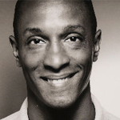
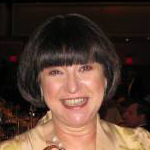
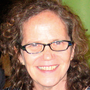

Speakers
Creative Writing Speakers
Bil Wright
Bil Wright is the author of the novels Sunday You Learn How to Box and One Foot in Love. His short fiction has appeared in many anthologies, including Black Silk, Shade and Black Like Us; his poetry has appears in the anthology, The Road Before Us. A member of the Dramatists Guild, his plays have been produced in the U.S. and Germany and are published in the collection, Tough Acts to Follow.
Lois Elaine Griffith
Lois Griffith is a Professor in the English Department. She is one of the founding members of the internationally know Nuyorican Poet's Cafe. She continues to work with the Nuyorican to help others discover the power of poetry as she did and to bring new art outside of mainstream culture to light. She has had her plays produced and published poems, novels and short stories.
Sheila Solomon Klass
Sheila Solomon Klass is a Professor Emerita in the English Department. She has a distinguished career teaching and writing for over 40 years. She is an extremely productive writer publishing 19 books and a number of articles. Her books include fiction and non-fiction often with strong, intriguing women as their heroines. The latest novel, Soldier’s Secret: The Secret Story of Deborah Sampson, is based on the true story of a woman who disguised herself as a man to fight in the American Revolutionary War.
Robert Zweig
Robert Zweig is a professor in the English department. He has had a variety of publications in journals, encyclopedias and books. Recently he published a memoir titled Return to Naples: My Italian Bar Mitzvah and Other Discoveries about his life as an American child of Italian, German, and Jewish descent. He has also literally written a book on writing, published by Pearson.
Fine Arts Speakers
Lisa Mellinger

Lisa is an adjunct professor in the Music and Art Department. An MFA in painting from the University of Texas, she is also a professional artist who has had several solo and group exhibitions including Almos Famous, Ortiz Gallery, San Antonio, Texas, and Spring, Eagle Rock Community Cultural Center, Los Angeles, CA.
Alizabeth Towery
Alizabeth Towery is a professor in the Music and Art Department. She is an artist and photographer with an MFA from the Visual Studies Workshop. She has taught at Parson School of Design and been a Senior Photography Editor at ABCNews.com.
Malcolm Linton
Malcom Linton is a student at BMCC. He is also a photo and video journalist based in New York. His work has appeared in many of the world's leading magazines and newspapers including Time, Newsweek, the New York Times, the Washington Post, Paris Match and Der Stern. He as covered Africa, Europe and the Middle East.
Sarah Haviland
Sarah Haviland is a professor in the Music and Art Department. her sculptures and installations have been exhibited nationally in museums and galleries. She also creates public art that has been exhibited in public spaces across the country.
Performing Arts Speakers
Susana Powell
Susana Powell is the chair of the Speech, Communications and Theatre Department. She has a bachelor of art degree at Bristol University, and a doctorate at the CUNY Graduate Center. A Shakespearean expert she has published and lectured extensively on his plays.
Elspeth Brown
Elspeth Brown is a BMCC and Hunter College graduate. Dancing since the age of three she has danced in the Pittsburgh Ballet Theater. Recently, she founded Eyes of a Blue Dog, a modern dance company that melds classical, jazz, hip-hop and other genres.
Diane Dowling
Diane Dowling is a professor and the Theatre Program Coordinator in the Speech, Communications and Theatre Arts Department. An actor and director Dowling has appeared in numerous productions. She regularly directs BMCC theatre productions.
Peter Pallis
Peter Pallis is the Non-Traditional Academic Advisor in the Academic Advisement & Transfer Center. Pallis is also one of the founding members of the band AnAkA who have two studio albums and have had hit videos on MTV.
Media Arts Speakers
Christopher Stein
Christopher Stein is an Associate Professor in the Media Arts and Technology Department. He teaches a variety of courses, from introductory multimedia to advanced multimedia programming. Prior to teaching at BMCC he was a principle at a small new media production company where he worked on every aspect of multimedia projects including Web sites, interactive applications and database-driven applications.
Sandra Poster
Sandra Poster is a Professor in the Speech, Communications and Theatre Arts Department. She received her PhD in Media Ecology from NYU and recently received an Emmy for her work on the TV series We Are New York.
Revital Kaisar
Revital Kaisar is a professor in the Media Arts and Technology Department. She is a graphic designer and has worked on print and web campaigns.
Jody Culkin
Jody Culkin is a professor in the Media Arts and Technology Department. She is an artist who's work combines sculpture with microcontrollers and multimedia. She has had numerous exhibits including at the Bronx Museum of Art and Comune di Roma Palazzo delle Esposizioni, Rome, Italy. Animation is another passion of hers, she regularly attends Comic Con, and is knowledgeable about different animation styles and techniques.